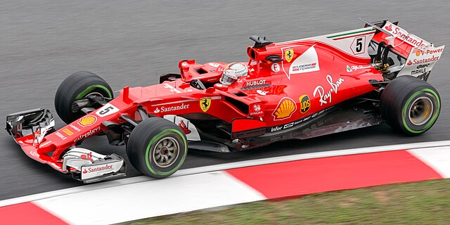

Dopo sei anni in Red Bull, Sebastian Vettel viene ingaggiato dalla Ferrari con l'arduo obiettivo di riportare il titolo mondiale a Maranello.
L'avversario da battere è sempre Lewis Hamilton e la sua Mercedes; si tratta di un'impresa che quasi mai sembra essere raggiungibile, tranne forse in un paio di occasioni.
Gli ultimi due anni di Seb nella Scuderia non sono conditi da grandi risultati, ma nonostante la mancata vittoria del titolo piloti, Vettel lascia un ricordo indelebile
nel cuore di ogni ferrarista, soprattutto grazie al suo amore per la Rossa.

Il primo anno con la tuta rossa per il pilota tedesco è pressoché positivo: non ha mai veramente la possibilità di lottare per il titolo mondiale, ma la sua stagione ha
comunque dei momenti incoraggianti. La prima vittoria arriva nel Gran Premio della Malesia, e, successivamente, trionfa anche in Ungheria e a Singapore.
La stagione di conclude con Hamilton che si aggiudica il primato nella corsa al titolo, seguito da Rosberg e proprio da Seb.
Statistiche 2015:
Il 2016 viene ricordato come l'anno del grande duello in casa Mercedes tra Hamilton e Rosberg, con quest'ultimo che si aggiudica il mondiale piloti all'ultima gara.
Vettel e la Ferrari concludono l'anno con zero vittorie.
Statistiche 2016:
La stagione successiva Vettel ha la prima grande possibilità di lottare per il titolo: il duello con il grande rivale britannico continua fino al terz'ultimo appuntamento, in Messico, dove Lewis diventa matematicamente campione. Seb perde il mondiale nonostante alcune grandi prestazioni alternate però ad un paio di "disastri" (sportivamente parlando), come in Giappone o soprattutto a Singapore, con l'incidente con il compagno di squadra Kimi Raikkonen e Max Verstappen, il tutto dopo essere scattato dalla Pole Position.
Statistiche 2017:
Il 2018 sembra finalmente essere l'anno giusto: il pilota tedesco vince quattro delle prime dieci gare e arriva all'appuntamento ad Hockenheim in testa al campionato.
Parte dalla Pole Position e mantiene la prima posizione fino al giro 52, quando va a muro ed è costretto a ritirarsi.
Perde il primato in classifica e da allora vince solo una volta in Belgio. Per la seconda volta di fila conclude la stagione al secondo posto, mentre in tanti ancora oggi
considerano quella gara in Germania l'inizio della fase calante di Seb.
Statistiche 2018:
Le due stagioni successive (2019-2020) sono le ultime di Vettel in Ferrari: affiancato dalla nuova speranza della Rossa Charles Leclerc, ottiene solo una vittoria a Singapore nel suo penultimo anno da ferrarista, e viene preceduto dal monegasco in classifica entrambe le volte. Si conclude così la sua esperienza con la scuderia italiana, seguita dal passaggio in Aston Martin.
Statistiche 2019:
Statistiche 2020: